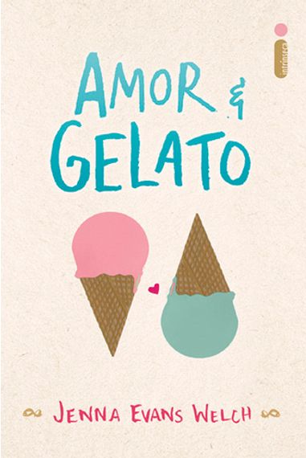

Donook

Inicio
Categorias
Dúvidas
Quem somos?

Amor & Gelato conta a história de Lina, que é uma garota alegre e feliz com a vida que compartilha ao lado da mãe, mas toda essa felicidade vem por diminuir drasticamente quando ela a perde para o câncer e sua vida muda de uma hora para outra, já que ela tem que se mudar dos Estados Unidos para a Itália e viver com um velho amigo de sua mãe que nunca tinha ouvido falar antes da chegada da doença, e que por tudo que foi dito, deduz que ele é o pai que nunca esteve presente em sua vida.
Ao chegar na Itália se depara com sua nova casa, que é situada em um cemitério, sim um cemitério! Lina não estava nem um pouco feliz com a sua mudança, e descobrir que sua nova casa fica em um cemitério é algo que faz ela ficar levemente assustada com a escolha da mãe sobre ir morar com um estranho em vez de ficar com a avó.
Preço: R$ 49,90
Neste livro, a autora Brené Brown trata de assuntos que costumam ser evitados como vulnerabilidade, vergonha, medo e imperfeição. Com seu texto, Brown busca mostrar ao leitores que a vulnerabilidade não é uma fraqueza, mas sim a melhor definição de coragem.
Quando fugimos de emoções complicadas como medo e decepção também nos fechamos ao amor, aceitação e criatividade, por isso Brené nos convida a entender a causa dos nossos medos, anseios, fugas, como também nos apresenta o quantos somos imperfeitos a fim de que tenhamos uma vida plena.
A obra tem uma linguagem simples e clara, a autora apresenta situações reais, que servem de exemplos para combater a vergonha e viver com ousadia.
Preço: R$ 79,90